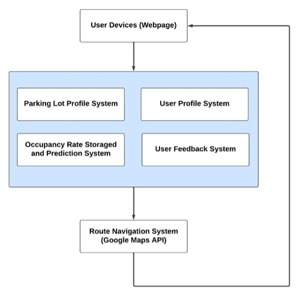
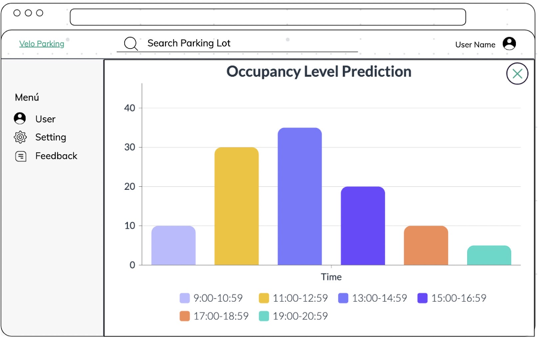

1. Preface
This document serves as the System Architecture Document for the development of The Bicycle Parking Lots Occupancy Locator Web Application. It provides a comprehensive overview of the system's architecture, detailing its design principles, components, and interactions. The document aims to ensure robustness, scalability, and efficiency in managing bicycle parking lot occupancy data. This document is intended for developers, architects, and stakeholders involved in the project, offering insights into the structural foundation of the application.
2. Table of Contents
- Preface
- Table of Contents
- System Overview
- Architecture Goals
- The Architecture of Bicycle Parking Lot Occupancy Locator System
- Repository Architecture
- Client-Server Architecture
- Architecture View
- 8.1. Logical View
- 8.2. Process View
- 8.3. Development View
- 8.4. Physical View
- Architecture Tier
- 9.1. Presentation Tier (User Interface)
- 9.2. Application Tier (Backend Services)
- 9.3. Data Tier (Database)
- Wireframes
3. System Overview
The main system, Bicycle Parking Lot Occupancy Locator system, allows users to access the information of a certain parking lot including names, location, capacity, predicted occupancy rate, and provide navigation to the chosen parking lot. The system consists of four subsystems: Parking Lot Profile System, Occupancy Rate Storage and Prediction System, User Profile System, and User Feedback System. The data of parking lots is stored in the Parking Lot Profile System and will be provided to the main system when it receives a query message. For the occupancy rate prediction, the historical data is collected and analyzed in the Occupancy Rate Storage and Prediction System. The information of users and their feedback will be stored in the User Profile System and User Feedback System. The Route Navigation System is an external system which utilizes Google Maps API to provide route navigation functionality to the system.
4. Architecture Goals
- Performance: The system should quickly respond to user queries and display queried contents without noticeable delay.
- Scalability: The system should support the increasing number of users and parking lots without performance degradation.
- Usability: The user interface should be intuitive and easy to navigate, allowing users to find and use features effortlessly.
- Security: User data, including user profiles and feedback, should be securely stored and transported.
- Maintainability: The system should continuously update, debug, and add functions.
5. The Architecture of Bicycle Parking Lot Occupancy Locator System
The system consists of several components:
- The user devices: web pages that users utilize to interact with the system.
- The Bicycle Parking Lot Occupancy Locator System consists of four subsystems:
- Parking Lot Profile System
- Occupancy Rate Storage and Prediction System
- User Profile System
- User Feedback System
- Route Navigation System: an external system (Google API) that provides route navigation.

6. Repository Architecture
- User Devices: Users interact with the system through the browser.
- Main System Controller: Controller that handles incoming requests from users, calls responding services, and returns responses to user devices.
- Services:
- Parking Lot Profile Service: Manages parking lot information.
- Occupancy Rate Prediction Service: Manages the collection and prediction of occupancy rates.
- User Profile Service: Manages user information and profiles.
- User Feedback Service: Manages user feedback.
- Repositories:
- Parking Lot Profile Repository: Handles data access for parking lot profiles.
- Occupancy Rate Repository: Handles data access for occupancy rates.
- User Profile Repository: Handles data access for user profiles.
- User Feedback Repository: Handles data access for user feedback.
- Data Storage:
- Parking Lot Data: Stores information about parking lots.
- Historical Data: Stores historical data used for predicting occupancy rates.
- User Data: Stores user profiles.
- Feedback Data: Stores user feedback.
7. Client-Server Architecture
- User Devices: Users access the system via web browsers or mobile applications.
- Client Side: The client side is responsible for presenting the user interface and handling user interactions. It sends requests to the server and displays the responses.
- Internet: The communication between the client and server happens over a network using protocols such as HTTP or HTTPS.
- Server Side:
- Application Server: Handles the business logic, processes client requests, and communicates with the database server.
- Database Server: Stores and manages data for parking lots, occupancy rates, user profiles, and feedback.
- External Systems (Google Maps API): Provides route navigation functionalities to the system. The server communicates with the external system to get navigation data and returns it to the client.
8. Architecture View
- 8.1. Logical View
- 8.2. Process View
- 8.3. Development View
- 8.4. Physical View
9. Architecture Tier
The system architecture for the parking lot management system is organized into three main tiers: the user interface (presentation tier), backend services (application tier), and database (data tier). Additionally, the architecture includes external APIs such as Google Maps API and Route Calculator API.
- 9.1. Presentation Tier (User Interface)
- User Registration/Login Interface
- Parking Lot Profiles Display
- Occupancy Prediction Display
- Route Navigation Interface
- User Feedback and Rating Interface
Purpose
Library or Framework
Programming Language: HTML5, CSS, Javascript or Python
App Framework: React, Angular or Vue.js
- 9.2. Application Tier (Backend Services)
- User Management Service
- Route Calculation Service
- Google Maps API
- Route Calculator API
- Parking Lot Management Service
- Feedback Management Service
- Occupancy Prediction Service
Purpose
Library or Framework
Programming Language: Java, Python
API: Google Maps API, Route Calculator API, Bicycle Route Calculator - Geovelo
IDFM Geovelo API
- 9.3. Data Tier (Database)
- User Database
- Parking Lot Database
- Route Database
- Feedback Database
Purpose
Library or Framework
Database Platform: SQL databases (e.g., MySQL, PostgreSQL)
Dataset: Occupancy Record data
Occupancy Record Data
10. Wireframes
- The first wireframe is the page when users first make access to our system. It welcomes users and includes a place to upload images at the left side of the page. On the right side, there is a place to sign up and log in.
- The second wireframe is our home page, which users will face when they sign up successfully. There is a search engine above the map to research preferred parking lot. At the upper right corner, there is an icon of the profile and shows username. At the left side, there is a menu bar displayed all the time to customize the page through settings, check and send feedback of parking lots and for sign out procedure.
- The third wireframe is the page when the user selects a certain parking lot. The information of the selected parking lot pops up at the right and displays general information such as its address, capacity, fee and infrastructure. There is a hyperlinked word “Feedback” to check feedback from other users and send feedback. At the bottom, there is a column displaying predicted occupancy levels of the selected parking lot. If the user clicks on the hyperlinked word “Detail”, the page moves on to the page shown in the fourth wireframe. If the user decides on the selected parking lot, then there is a navigate button to click to move on to the navigation page, which is shown in the fifth wireframe.

- The fourth wireframe is the page, which displays a bar graph of the predicted occupancy rate, and users can observe the time when the parking lot is less crowded.
- The fifth wireframe is the route navigation page when the user decides a parking lot. It displays the current location and destination at the menu bar and the route navigation is shown on the map.